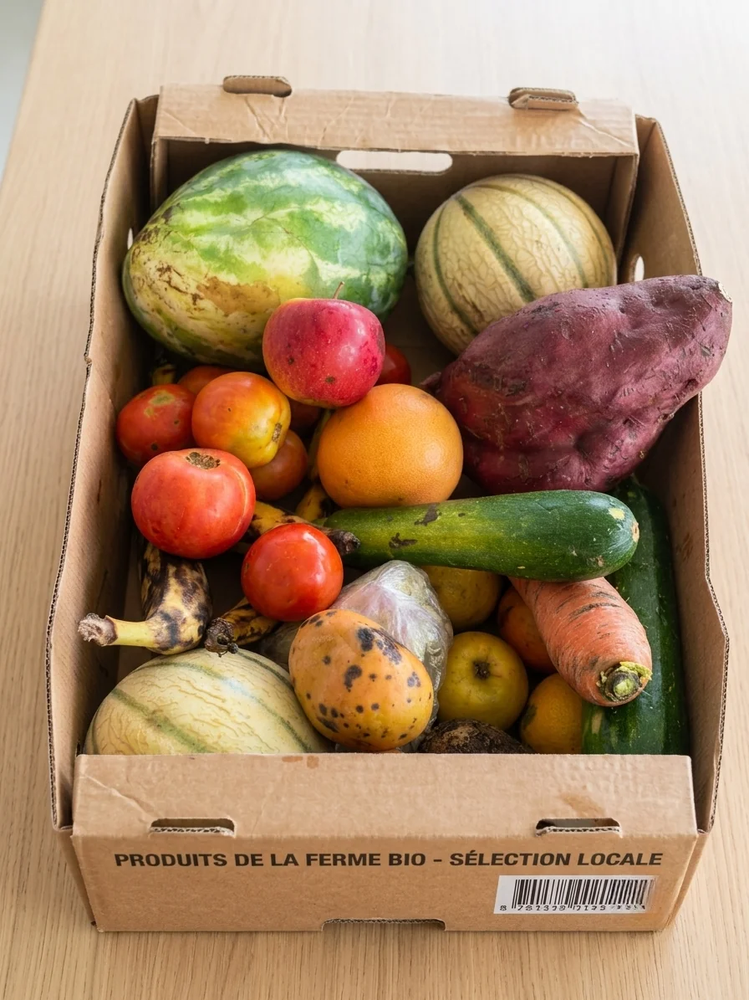
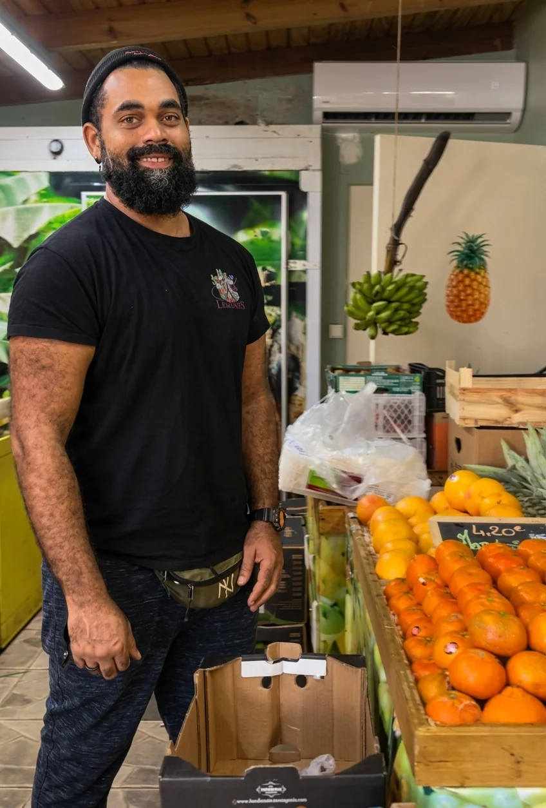

Arrondir ses fins de mois tout en faisant quelque chose d'utile, c'est possible ?
Oui. Et c'est exactement ce que propose Gaspiz.
Si tu vis aux Antilles-Guyane, que tu es à ton compte et que tu cherches un complément de revenus flexible et motivant, lis la suite, parce que cette opportunité est faite pour toi.
Que tu sois en Guadeloupe, en Martinique, en Guyane française, à Saint-Martin ou à Saint-Barth, Gaspiz se développe sur tous nos territoires et cherche des profils locaux, motivés et ancrés dans leur île pour nous aider à grandir.
C'est quoi Gaspiz ?
Gaspiz c'est l'appli anti gaspi des Antilles-Guyane. Concrètement, elle connecte des commerçants locaux (boulangeries, restaurants, épiceries, traiteurs) avec des consommateurs qui achètent leurs invendus sous forme de paniers surprise, 2 à 3 fois moins chers que le prix normal.
Résultat ? Les commerçants déstockent sans perdre, les consommateurs mangent bien sans se ruiner, et on évite des tonnes de gaspillage alimentaire sur nos territoires.

Aux Antilles-Guyane, la vie chère est une réalité quotidienne. Les prix des produits alimentaires sont en moyenne 30 à 40% plus élevés qu'en France hexagonale. Gaspiz apporte une réponse concrète à ce problème, et c'est exactement pourquoi le projet prend autant d'ampleur sur nos îles.
Aujourd'hui Gaspiz c'est :
- ✅ 20 000 utilisateurs
- ✅ 70 commerçants partenaires
- ✅ 40 tonnes de gaspillage évitées
- ✅ Présent en Guadeloupe, Martinique et Guyane
C'est quoi le rôle d'apporteur d'affaires Gaspiz ?
Simple : tu convaincs de nouveaux commerçants de rejoindre Gaspiz sur ton territoire.
Pas besoin d'être commercial de métier. Tu as juste besoin d'être à l'aise pour aller à la rencontre des commerçants de ton île et leur parler d'une solution concrète qui va booster leur chiffre d'affaires.
En pratique ça ressemble à quoi ?
- Tu identifies des commerçants susceptibles d'être intéressés en Guadeloupe, Martinique, Guyane, Saint-Martin ou Saint-Barth
- Tu leur présentes Gaspiz et les avantages concrets de la plateforme
- Tu les accompagnes jusqu'à leur inscription
- Et tu touches un pourcentage sur chaque forfait vendu 💰

Le gros avantage ? Tu travailles à ton rythme, depuis ton territoire, avec les commerçants que tu connais déjà ou que tu croises au quotidien. Pas de patron, pas d'horaires imposés, pas de quota à atteindre.
Une journée type d'apporteur d'affaires Gaspiz
Tu te demandes à quoi ressemble concrètement cette mission ? Voilà un exemple :
Le matin, tu passes voir la boulangerie du coin que tu fréquentes déjà, tu lui parles de Gaspiz en 5 minutes autour d'un café. L'après-midi, tu envoies quelques messages WhatsApp à des restaurateurs de ta connaissance. En fin de semaine, tu fais le point sur tes prospects et tu relances ceux qui hésitent encore.
1 à 2h par semaine suffisent pour générer un vrai complément de revenus. Et plus tu t'investis, plus tu gagnes.
Combien ça rapporte ?
Tu gagnes un pourcentage sur chaque forfait vendu. Plus tu recrutes de commerçants, plus tu gagnes. Certains apporteurs d'affaires génèrent plusieurs centaines d'euros par mois, en consacrant seulement 1 à 2h par semaine.
Pas de plafond. Pas de contraintes. 100% flexible.
C'est le complément de revenus idéal si tu es déjà à ton compte et que tu veux rentabiliser ton réseau local sans te rajouter un deuxième job à plein temps.
C'est fait pour toi si…
- Tu es freelance, auto-entrepreneur, ou tu exerces une activité libérale
- Tu es kinésithérapeute, infirmier libéral, coiffeur, photographe, coach, graphiste, agent immobilier (peu importe ton secteur)
- Tu es à l'aise pour aller à la rencontre des gens
- Tu veux un complément de revenus sans contraintes
- Tu as envie de contribuer à un projet qui a du sens sur ton territoire
- Tu es basé en Guadeloupe, Martinique, Guyane, Saint-Martin ou Saint-Barth
Tant que tu es motivé et que tu crois au projet, on veut te rencontrer.
Pourquoi rejoindre l'aventure Gaspiz ?
Parce que Gaspiz c'est pas juste une appli. C'est un projet humain, ancré dans nos territoires, qui répond à une vraie problématique : le gaspillage alimentaire et la vie chère aux Antilles-Guyane.
Rejoindre Gaspiz en tant qu'apporteur d'affaires en Guadeloupe, Martinique ou en Guyane, c'est participer à quelque chose de concret et de positif, tout en boostant ton pouvoir d'achat.
Et puis soyons honnêtes : il y a peu d'opportunités aux Antilles-Guyane qui te permettent de gagner de l'argent supplémentaire à ton rythme, sur ton territoire, en faisant quelque chose d'utile. Gaspiz, c'est cette opportunité-là.
FAQ : les questions qu'on nous pose le plus
Est-ce qu'il faut avoir de l'expérience en vente ?
Non. Si tu es à l'aise pour parler à des gens et que tu crois au projet, c'est suffisant. On t'accompagne avec les outils et les arguments pour convaincre les commerçants.
Est-ce compatible avec mon activité principale ?
Oui, c'est fait pour ça. Que tu sois infirmier libéral en Martinique, kiné en Guadeloupe ou graphiste en Guyane, cette mission s'adapte à ton emploi du temps.
Est-ce que je signe un contrat ?
Oui, un contrat de prestation est établi pour encadrer la collaboration et sécuriser ta rémunération.
Est-ce disponible à Saint-Martin et Saint-Barth ?
Oui ! On cherche des profils sur tous les territoires des Antilles-Guyane, y compris Saint-Martin et Saint-Barth (Gaspiz bientôt disponible sur ces territoires également).
Comment je me lance ?
Tu nous contactes, on échange pour voir si le projet te correspond, et on t'embarque dans l'aventure.
Comment postuler ?
Envoie-nous un message en DM sur Instagram ou par mail à 👉 megane@gaspiz.fr
On te répondra rapidement pour en discuter et voir si le projet te correspond.
On a hâte de te rencontrer 🌴
L'équipe Gaspiz